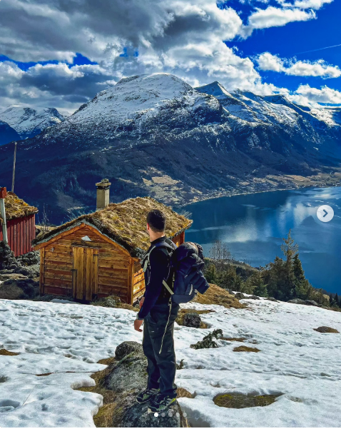

Vine de Erasmus y me quedé en Noruega
La primera vez que vine a Noruega fue de Erasmus. Estudiaba Ciencias de la Actividad Física y del Deporte y pasé parte de la carrera en Notodden. Allí conocí a mi pareja y, con el tiempo, decidimos quedarnos a vivir en Noruega.

Desde entonces hemos vivido en varios sitios, entre ellos Kragerø, Stathelle y Bergen. Ahora vivimos en Drammen. También hemos viajado por todo el país, aunque una cosa es visitar una ciudad unos días y otra pasar allí un invierno entero.
Viniendo de Valencia, una de las cosas a las que me he tenido que acostumbrar es a que en invierno se haga de noche tan pronto. Con el tiempo hemos aprendido a llevar mejor esos meses. Y luego llega el verano, cuando puedes salir a dar un paseo después de cenar y todavía te quedan horas de luz. Esa es una de las cosas que más disfruto de vivir aquí.